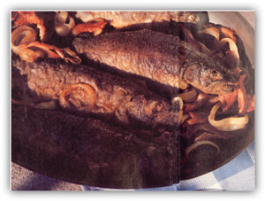
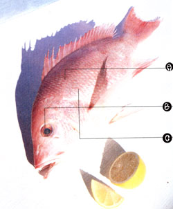

Last summer, when MOTHER'S editor in chief returned from North Carolina's Outer Banks with a freezerful of yellowfin tuna, he shared his catch with the editorial staff. Everyone applauded his skill and praised his generosity. Then, all afternoon, editors and illustrators skulked into my office, muttering, "How do you cook this stuff?"
There's nothing like raw fish for intimidating perfectly competent cooks. Assured with soufflés, blasé with béarnaise, they shrink from a sea bass. And no wonder: Fish is badly cooked so consistently that the means of preparing it can seem as unfathomable as the waters it came from.
Actually, fixing fish requires neither elaborate equipment nor complicated technique. If you can bake, broil, fry and simmer, you can produce superb seafood. When dinner goes awry, it's usually because 1) the fish isn't fresh, 2) the cooking method doesn't match the species or 3) the fish overcooks. All these pitfalls are easy to avoid.
Fresh or Foul?
Fish is the most perishable of foods-delightful on Monday, rank on Thursday. The "fishy flavor" that keeps so many people loyal to pork chops is the taste of old fish. And once fish has turned, no sauce can disguise its taste.
If you reel in your own dinner, the rule is simple: Cook it (or freeze it) the day you catch it-or the next day at the latest. But if you're casting about for supper in a supermarket, things get more complicated; you don't know how long that fish has been out of water. How can you tell if it's edible before you buy it?
There are several ways to judge whether fish is fresh (see above). But the best way is to smell it. Fresh fish has either no odor at all or a pleasant, briny scent. Fish with a strong odor is too old to buy; it will taste the way it smells, no matter how you cook it.
a) FLESH should be firm and spring back when poked.
b) EYES should be bright and clear.
c) SCALES should be an. chored to the skin.
Basically, there are two kinds of fish and four ways to cook them. The trick is to match the former with the latter.
Whether freshwater or saltwater, fish are either lean or fat. Most are lean. Whatever oil they have is concentrated in the liver (hence cod-liver oil). With little fat in the flesh, lean fish are white or light-colored and mild in flavor. Examples: perch, pike, bass, cod, flounder, haddock and red snapper.
In fat fish, oil is distributed throughout the flesh, which is darker or pink, with a more pronounced flavor. Whitefish, bluefish, mackerel, tuna and some salmon are popular fat fish. (Don't be put off by that term. Even the oiliest fish are only about 10% fat; ground beef weighs in at 30%. And researchers are investigating the possibility that fatty omega-3 acids deter heart disease.)
Once you know a fish's fat content, you can decide on an appropriate cooking technique: baking, broiling, frying or poaching (simmering in a liquid). With lean fish, the critical problem is to keep it from drying out. Thus, it lends itself to the wet-heat methods- poaching and frying-which add moisture or fat. Lean fish also bakes well, as long as it's covered with a sauce or basted with an oilbased marinade. Broiling is chancy. The intense, direct heat dries and toughens. If you must broil lean fish, watch it like a fish hawk and slather it with fat.
Fat fish, on the other hand, thrives under dry heat; it bakes and broils extremely well. It's less successful when fried (super-greasy) or poached (except for salmon, the classic poached fish). However it's cooked, fat fish can taste oily unless it's prepared with an acid ingredient: citrus, vinegar or wine.
The weather and the food distribution system being what they are, it's hard to predict what will be caught and delivered. So it's best to shop for a type of fish, rather than for a particular species. While the fish in each category are not identical, they are largely interchangeable. If your recipe calls for orange roughy-a lean New Zealand import-and there's none to be had, substitute any lean variety that's fresh and affordable.
In preparing fish, the single most important factor is not how you cook it but when you stop. Badly cooked usually means over-cooked-a sweet, succulent fish made dry, tasteless and tough. There are three ways to tell when it's done:
The Canadian method. Lay the fish on the counter and measure it at its thickest part. Then, regardless of cut or cooking technique, cook it 10 minutes per inch, even if it's stuffed or rolled. The only exceptions: 15 minutes per inch if cooked in foil, 20 minutes if frozen.
Nothing so simple should work so well. Devised by the Canadian Department of Fisheries, the system is almost infallible. Occasionally, fish will overcook, so it's wise to check it shortly before its time is up, using the two methods listed below.
Opacity. When fish is done, it changes from translucent to opaque. Insert a thin knife into the thickest part of the fish, and look. The flesh should also be moist and shiny. Opacity is the most accurate measure of doneness.
The flake test. Virtually every cookbook ever written says to cook fish "until done, or until it flakes easily with a fork." This is helpful if you have ever seen a fish actually "flake," useless if you haven't. Most people visualize the fish disintegrating into chips the size of soap flakes-and, if cooked long enough, it will oblige. Unfortunately, at that point it's inedible.
When fish is cooked, it doesn't so much flake as chunk, or break apart. Insert a fork into the thickest part-it should enter easily, with little resistance-and twist gently; the fish should crack apart. Although the best known of the three, the flake test is the least reliable. By the time some varieties flake-especially solid, meaty ones like salmon and tuna-they're overdone.
Once you've eaten well-cooked fish, you'll know it when you see it, touch it and taste it. But if, like many people, you've never eaten it any way but overcooked, your primary problem will be convincing yourself that it really is done when it meets the three tests. Until all this is second nature, you might try these rules of thumb: If the fish looks halfraw, stay alert; it's almost ready. If you can't decide whether it's done, it is. If you're absolutely certain it's fully cooked, call the cat. Everyone else will be eating hamburger.
Baking. Baking is one of the simplest, easiest and safest ways to cook fish. Preheat the oven to 450°F and wipe the fish with paper towels. Oil a baking pan, or coat it with nonstick spray. Place the fish in the pan, and brush with a mixture of equal parts lemon juice and melted butter. Bake 10 minutes per inch, basting twice and checking for doneness 1 or 2 minutes earlier.
The important thing is not how you cook it but when you stop.
Broiling. Preheat the broiler for 10 minutes. Oil a broiling pan (or coat it with nonstick spray), place the fish on the rack, brush with butter or oil (or butter and lemon juice) and broil 2 to 4 inches from the heat for 10 minutes per inch, basting and checking for doneness frequently. Only very thick pieces should be turned during cooking.
Poaching. Texture largely determines whether a fish poaches well. Soft-textured fish-bluefish, for example-disintegrate in a simmering liquid. Firm fish-perch, trout, salmon, swordfish, snapper, in fact most fish-hold their shape.
The traditional poaching liquid is a court bouillon ("coor boo-yon"), a vegetable-and-wine broth that varies with the cook. A typical list of ingredients: 6 1/2 cups water; 1 1/2 cups dry white wine; 1 large carrot, sliced; 1 rib celery, sliced; 1/2 lemon, sliced; 2 sprigs parsley; 6 black peppercorns; 1 bay leaf. Simmer the ingredients for 10 to 15 minutes to combine the flavors.
To poach fish, prepare the court bouillon (or use a liquid of your own devising) in a large pot. Wipe the fish with paper towels, place it on a rack and lower it into boiling liquid. Cover the pot. When the liquid returns to a boil, immediately reduce the heat until the liquid quivers but does not boil. (Small bubbles should rise gently from the bottom.) Cook 10 minutes per inch, checking for doneness 1 or 2 mintues earlier.
Plain poached fish can be rather bland. Plan to serve it with a sauce or condiment.
Frying. Fish can be pan-fried (in a little oil) or deep-fried (in a lot).
Pan-frying: Heat 1/8 to 1/4 inch vegetable oil in a heavy skillet until oil is medium hot (a drop of water should sizzle when dropped into the oil). Wipe the fish with paper towels, dust with seasoned flour (a mix of flour, salt and pepper) and fry 10 minutes per inch, dividing the time between the two sides and checking for doneness 1 or 2 minutes earlier. Don't crowd the fish while they're cooking, or the oil will cool and the fish will be soggy. Drain on paper towels and serve immediately.
Deep-frying: Make a batter and chill it. (Any flour-based batter will do. One example: Combine 1 cup flour, 3 tablespoons cornstarch, l teaspoon salt, dash nutmeg and 1/8 teaspoon pepper. Add 1 cup beer and 1 tablespoon oil and mix until smooth.)
Chill the fish, which should be in relatively small pieces. Heat 2 to 3 inches oil in deep-fryer or deep skillet to 375°F (a 1-inch cube of bread should brown in 30 seconds). Don't fill the pan more than half full, or the oil will overflow when hot. Pat the fish pieces dry with paper towels, dip them in chilled batter and drop them into the oil. Don't crowd them, or the oil will cool. Fry 10 minutes per inch, turning once and checking 1 or 2 minutes before time is up. The outside should be crisp and brown, the inside moist and opaque. The batter should form a crust and seal the fat out.
Three Fine Kettles of Fish
Baked, Stufed Red Snapper
3/4 cup chopped celery
1/2 cup chopped onion
1/4 cup plus 2 tablespoons melted butter or margarine, divided
1 quart dry bread cubes
1/2 cup sour cream
1/4 cup diced, peeled lemon
2 tablespoons grated lemon rind
1 teaspoon paprika
1 teaspoon salt
1 whole, dressed red snapper (or other lean fish), about 4 pounds
Cook celery and onion in 1/4 cup butter until tender. Combine with bread cubes, sour cream, lemon, rind and seasonings.
Clean, wash and dry fish. Stuff fish loosely. If desired, close opening with small skewers or toothpicks. Place in well-greased baking pan, brush with some of the remaining butter and bake until done, basting occasionally with butter. Remove skewers and serve. Serves 6.
Fillets in Caper-Mustard Sauce
4 teaspoons butter or margarine, divided
1 teaspoon flour
1/4 cup water
2 tablespoons dry white wine
1 teaspoon Dijon-style mustard
1 teaspoon drained capers
1/2 teaspoon grated lemon rind
Freshly ground pepper
2 lean fish fillets, 5 to 6 ounces each
2 teaspoons lemon juice Salt to taste
Melt 2 teaspoons butter or margarine in small saucepan. Mix in flour and cook over low heat, stirring constantly, for 1 minute. Remove from heat; stir in water, wine and mustard. Return to heat and bring to a boil; reduce heat and simmer, stirring constantly, until thickened. Add capers, lemon rind and pepper to taste; remove from heat and keep warm.
Melt remaining butter and add lemon juice. Brush fillets with lemon butter and broil or bake until done. Place fillets on serving plate, add salt to taste and spoon sauce over them. Serves 2.
Enjoy this treat by a stream or re-create the river-outing atmosphere in your home.
1/2 pound bacon slices
2 white onions, thinly sliced, separated into rings
1/3 cup yellow cornmeal
1/3 cup all-purpose flour
1 teaspoon salt
1/4 teaspoon pepper
4 8-ounce trout, cleaned and scaled
In a large skillet, fry bacon until crisp. Remove from skillet; drain on paper towels. Crumble into large pieces. Reserve 2 tablespoons bacon drippings in skillet. Reserve remaining drippings. Add onion rings to drippings in skillet; saute until soft and transparent. Remove from skillet; set aside. Add 2 to 3 tablespoons reserved drippings to skillet; heat. In a shallow dish, combine cornmeal, flour, salt and pepper. Rinse trout; shake dry. Dip rinsed trout in cornmeal mixture, thoroughly coating both sides. Panfry coated trout in hot bacon drippings 6 to 8 minutes, turning once, until coating is crisp and fish tests done. Spoon sauteed onions and crumbled bacon around fish. Serve immediately from skillet.
Once you become a fearless fish cook, you'll find that seafood preparation is the easiest and fastest cooking you can do. And you won't be unnerved when your boss comes to work with yellowfin tuna. Just broil it, basting with a mixture of lemon juice, Tabasco and melted butter. It's a good recipe. I got it from our editor in chief.
Carol Taylor is MOTHER's food editor.
|
 |
 |
|